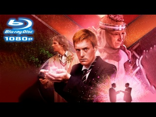
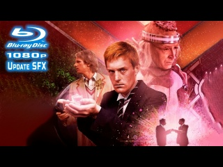
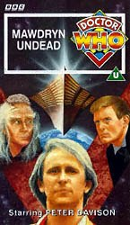
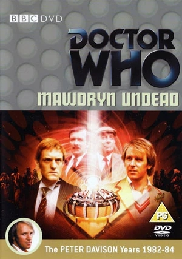
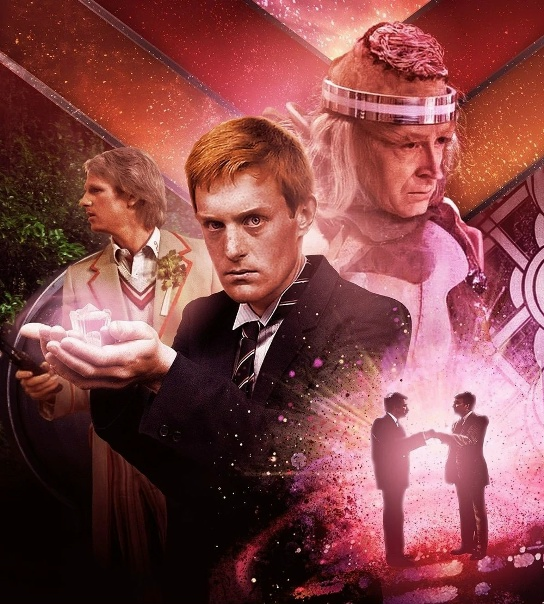

помощник

помощник
Субтитры: Русские и Английские |  |
|---|---|
с обновленными спецэффектами Субтитры: Русские и Английские |  |
с обновлением визуальных эффектов (cunningmunki) Субтитры: отсутствуют | над серией] |
Mawdryn Undead
Дата выхода: 1-9 февраля 1983
Формат: 4 эпизода по 25 мин.
| | помощник | помощник |
ТАРДИС попадает на дрейфующий космический лайнер, связанный трансмат-капсулами с английской школой на Земле. Доктор оказывается в 1983 году, а Нисса и Тиган — в 1977-м, где им на помощь приходит Бригадир Летбридж-Стюарт, старый друг Доктора из времён UNIT. Вот только Бригадир из 1983-го Доктора совсем не помнит — какая-то травма стёрла воспоминания. Тем временем в школе появляется подозрительный студент Турлоу — и он не совсем тот, за кого себя выдаёт. Первая часть трилогии Чёрного Стража.
Роль Бригадира изначально писали под Йена Честертона — первого спутника Доктора, но актёр Уильям Рассел был недоступен. Марк Стриксон перекрасил волосы из русых в рыжий — продюсер счёл, что блондином он слишком похож на Дэвисона. «Mawdryn» по-валлийски значит «недобитый мертвец». А графика с радужными спиралями взята из демо-кассеты домашнего компьютера BBC Micro.
 VHS - ноябрь 1992 |   DVD+Boxset - 10 августа 2009 |  Blu-ray - 18 сентября 2023 * Версия в нашей группе |
|---|
